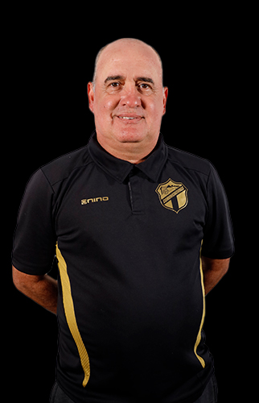
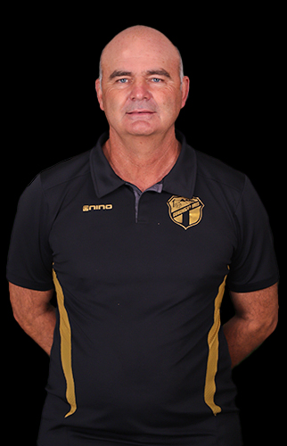

Entrendor del primer equipo Comunicaciones
Fecha Nacimiento: 20/01/1966
Edad: 56
Nacionalidad: Uruguaya

Entrendor del equipo de primera divisón de Comunicaciones B
Fecha Nacimiento: 25/09/1963
Edad: 58
Nacionalidad: Argentina